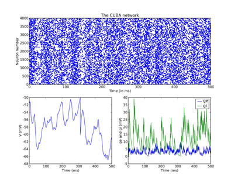

In this part of the tutorial, we set up our first serious network that actually does something. It implements the CUBA network, Benchmark 2 from:
Simulation of networks of spiking neurons: A review of tools and strategies (2006). Brette, Rudolph, Carnevale, Hines, Beeman, Bower, Diesmann, Goodman, Harris, Zirpe, Natschlager, Pecevski, Ermentrout, Djurfeldt, Lansner, Rochel, Vibert, Alvarez, Muller, Davison, El Boustani and Destexhe. Journal of Computational Neuroscience
This is a network of 4000 neurons, of which 3200 excitatory, and 800 inhibitory, with exponential synaptic currents. The neurons are randomly connected with probability 0.02.
from brian import * taum = 20*ms # membrane time constant taue = 5*ms # excitatory synaptic time constant taui = 10*ms # inhibitory synaptic time constant Vt = -50*mV # spike threshold Vr = -60*mV # reset value El = -49*mV # resting potential we = (60*0.27/10)*mV # excitatory synaptic weight wi = (20*4.5/10)*mV # inhibitory synaptic weight eqs = Equations(''' dV/dt = (ge-gi-(V-El))/taum : volt dge/dt = -ge/taue : volt dgi/dt = -gi/taui : volt ''')
So far, this has been pretty similar to the previous part, the only difference is we have a couple more parameters, and we’ve added a resting potential El into the equation for V.
Now we make lots of neurons:
G = NeuronGroup(4000, model=eqs, threshold=Vt, reset=Vr)
Next, we divide them into subgroups. The subgroup() method of a NeuronGroup returns a new NeuronGroup that can be used in exactly the same way as its parent group. At the moment, the subgrouping mechanism can only be used to create contiguous groups of neurons (so you can’t have a subgroup consisting of neurons 0-100 and also 200-300 say). We designate the first 3200 neurons as Ge and the second 800 as Gi, these will be the excitatory and inhibitory neurons.
Ge = G.subgroup(3200) # Excitatory neurons Gi = G.subgroup(800) # Inhibitory neurons
Now we define the connections. As in the previous part of the tutorial, ge is the excitatory current and gi is the inhibitory one. Ce says that an excitatory neuron can synapse onto any neuron in G, be it excitatory or inhibitory. Similarly for inhibitory neurons.
Ce=Connection(Ge, G, 'ge') Ci=Connection(Gi, G, 'gi')
We randomly connect Ge and Gi to the whole of G with probability 0.02 and the weights given in the list of parameters at the top.
Ce.connect_random(Ge, G, 0.02, weight=we) Ci.connect_random(Gi, G, 0.02, weight=wi)
Set up some monitors as usual. The line record=0 in the StateMonitor declarations indicates that we only want to record the activity of neuron 0. This saves time and memory.
M = SpikeMonitor(G) MV = StateMonitor(G, 'V', record=0) Mge = StateMonitor(G, 'ge', record=0) Mgi = StateMonitor(G, 'gi', record=0)
And in order to start the network off in a somewhat more realistic state, we initialise the membrane potentials uniformly randomly between the reset and the threshold.
G.V = Vr + (Vt-Vr) * rand(len(G))
Now we run.
run(500*ms)
And finally we plot the results. Just for fun, we do a rather more complicated plot than we’ve been doing so far, with three subplots. The upper one is the raster plot of the whole network, and the lower two are the values of V (on the left) and ge and gi (on the right) for the neuron we recorded from. See the PyLab documentation for an explanation of the plotting functions, but note that the raster_plot() keyword newfigure=False instructs the (Brian) function raster_plot() not to create a new figure (so that it can be placed as a subplot of a larger figure).
subplot(211) raster_plot(M, title='The CUBA network', newfigure=False) subplot(223) plot(MV.times/ms, MV[0]/mV) xlabel('Time (ms)') ylabel('V (mV)') subplot(224) plot(Mge.times/ms, Mge[0]/mV) plot(Mgi.times/ms, Mgi[0]/mV) xlabel('Time (ms)') ylabel('ge and gi (mV)') legend(('ge','gi'), 'upper right') show()